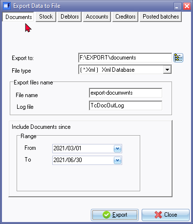

Export documents
Using this facility, you may also export the data for sales documents (invoices, credit notes and quotes) as well as purchase documents (purchases, supplier returns and orders) in an open Set of Books to the available file formats.
All the information for each document, as entered in Documents (Default ribbon), will be exported in the selected file format.
To be able to import the data for sales documents (invoices, credit notes and quotes) as well as purchase documents (purchases, supplier returns and orders) in Import (Setup ribbon), you need to create a valid XML Database File format on your system in Export (Setup ribbon).
To export Documents:
- On the Setup ribbon, select Export.
- Click on the Documents button.
 - Select and/or enter the following:
- Export to - The installation directory in which osFinancials5 is installed, will be displayed. You may click on the Browse icon to select a folder on the Browse for Folder screen. You may then select any available folder, or drive, on your system into which you wish to export the data.
- File type - Select to export the file in the XML Database (*XML), Comma Separated Variable (*CSV), Lotus Spreadsheet File (*WK1), MS Excel Spreadsheet (*XLS), or any other format available on your system from the list.
- Export files name - Enter the File name. You need to select this file at a later stage when you wish to import the file, or analyse the data in a spreadsheet.
- Log file - Enter the Log file name.
- Range - From / To - Select the date from and to. All documents in the selected period(s) should be included in the export file.
- Click on the Export button to create the export file, and save it in the specified directory.